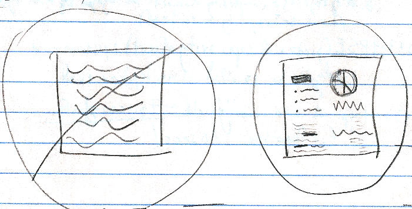

We don't pay attention to boring things
Need to get users' attention for your web site? Worried about giving boring presentations? Read these helpful ideas from chapter 4 of Medina's book, "Brain Rules" for ideas on getting people's attention in the web development, IA and UX fields.
Rule #4: We don't pay attention to boring things
3 ways to grab your attention
- familiarity: we use previous experience (memory) to predict where we should pay attention. Oddly, this slightly contradicts #2, as our attention can also be captured by the novel. Designers will need to carefully balance the two.
- interest: sometimes called importance or arousal. Interestingly, the reverse is also true, novel/unusual/unpredictable/distinctive stimuli can create interest and, thus, harness attention.
- awareness: using a stimulus to which the brain is capable of paying attention (this relates to perceptual processing and is dealt with more in chapters 9 and 10).
Posner's theory of attention (Red Alert)
- Alerting or Arousal Network:monitors the sensory environment for any unusual activities, detects new stimuli.
- Orienting Network:gains more information about a stimulus.
- Executive Network:decides what to do, based on the nature of the stimulus.
How to Get Attention
- Use Emotions: an ECT (emotionally charged event or emotionally competent stimulus) stays longer in our memory and is recalled with greater accuracy than neutral memories, because of the release of dopamine by the amygdala. Universally experienced stimuli (from evolutionary theory) are:
- Food: Can I eat it?
- Threats: Will it eat me?
- Sex: Can I mate with it? Will it mate with me?
- Familiarity and Pattern matching: Have I seen it before?
- Give Big-Picture Meaning, not Details: we remember the gist of an experience at the expense of peripheral details. However, by creating a hierarchy of gist (or associations between concepts), we can better understand and remember details. Apparently, the brain loves hierarchy and patterns. Incidentally, this is how you become an expert: by organizing your knowledge around core concepts to guide your thinking.
- Don't Expect Multitasking: we can't and don't multitask. Your brain focuses on concepts sequentially, one at a time. People who look like they multitask well, actually have good working (short-term) memories. Note that a more familiar task is less stressful on your brain than an unfamiliar one. A distraction-free zone might help you to be productive and will certainly do better at holding users' attention. In other words, no *&@! blinking ads.
- Provide Breaks: the brain needs a break, or timed interruptions. In other words, don't tell too much at once, as people need time to process, connect the dots, and digest the information. Headings help people scan a web page, and whitespace and images can break up the text helpfully, as well.
Ideas for Better Presentations
- Each 10-minute segment should cover only one high-level, core concept, using most of the time to explore the details of the concept. Give the core concept first, and then explain details. Periodically re-orient the listeners to the outline of your presentation (a "you are here" indicator that works like a verbal breadcrumb).
- Bait the hook: provide a compelling ECT hook every 10 minutes. The hook should:
- trigger an emotion
- be a relevant story or anecdote
- be placed between 10-minute segments, as a transition
Bibliography
Medina, J., Stevenson, R. W., & Pearson, M. (2008). Brain rules: 12 principles for surviving and thriving at work, home, and school. Seattle, Wash: Pear Press.